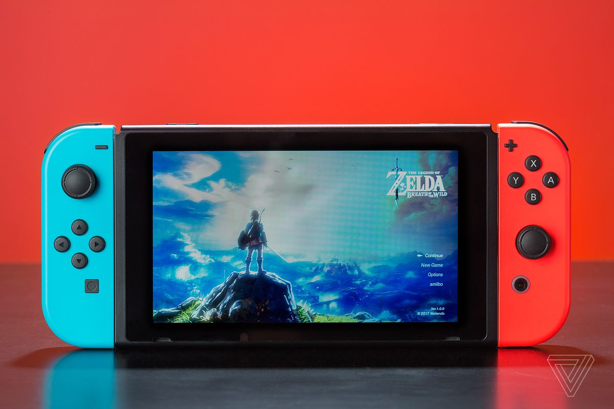

Viet NguyenDo
Portfolio
Interests
Video games have always been a big part of my life. Video games for me was my form of escape into a fantasy world. The first video game that I owned was Pokemon Leaf Green for the GameBoy Advance. I have many fond memories of playing on my Gameboy from playing on long car rides to staying up until 5 in the morning just to keep playing. My favorite memory of playing Pokemon had to be when I beat the game for the first time. The adrenaline rush I got right before issuing the final attack, knowing that I finally beat the game, will be one of the feelings I will remember forever. These memories and experiences I have had with video games carried on with me as I got older and I continued to play video games. The first game console that I bought for myself would be the Nintendo Switch. Now that I have my own money to spend, it allows me to play the new games right as they come out instead of watching other people play them while waiting for someone to buy the game for me.

My interest in photography started in high school when I took a photography class. My uncle who is a photographer let me borrow one of his older cameras. The camera itself was still pretty new and I made a point to take good care of it. Over the course of the class, I grew to love going on adventures to take photos, whether it be a casual walk to the park or a sprint for down to the beach to catch the sunset or a midnight hike to catch the sunrise. It was these adventures that led me to also enjoy hiking altogether. Many projects for that class gave excuses for my friends and I to go on hikes together or trips down to Seattle on the premise of taking photos which also led to great memories.By the time the class was over, my uncle knew how much I enjoyed photography so he let me keep the camera. At one point in my life, I thought about becoming a professional photographer and sometimes I wonder how I could pursue graphic design and photography at the same time. At the end of the day,I decided to take one step at a time and see how it goes from there.
From hiking for my photography projects, it eventually led to my interest in hiking itself. My mom was always a avid hiker not the sense that she does long and difficult hikes but she likes hiking the easier trails a lot. When I was younger, she always tried to push it on to me to get moving and get some form of exercise but I was never really interested. However, after my friends pushed me to hike with them for our photography projects, I eventually grew to love hiking more. I remember distinctly when my friends and I for some reason decided that we would do a mountain trail hike at 3 AM to get to the top in time for the sunrise. We hiked up the trail in pitch black darkness holding our flashlights and our camera equipment. However, after we make it to the top for the sunrise, it was all worth it. Just being outside in the fresh crisp air with all the trees around feels so relaxing and refreshing after being in the city for a long time. Hiking really allows me to take it slow and enjoy what is going on around me. Although I do not have time to go on hikes anymore, I still enjoy them during my breaks from school or work.
Anime is one of those interests where people do not talk about it publicly very much but there are many people who enjoy it. I started to watch anime when I was around 13 and my cousin introduced it to me. I started to watch a few series that he recommended and eventually I was hooked. There is something about the way anime is conveyed, through the different art styles, voice acting and the animation itself that brings out so much more emotion out of me than normal TV shows or movies. In addition, the music tracks to some of these series are incredible to listen to. From quiet and light piano music to epic battle music, any genre on music you can find in an anime series. To add on to that, anime is amazing in the sense that anime is so crazy and diverse that you can at least find something that interests you. One of my favorite anime series of all time would have to be Full Metal Alchemist: Brotherhood. The in-depth story plot along with the incredible action scenes makes it a classic anime series that every anime fan should watch.